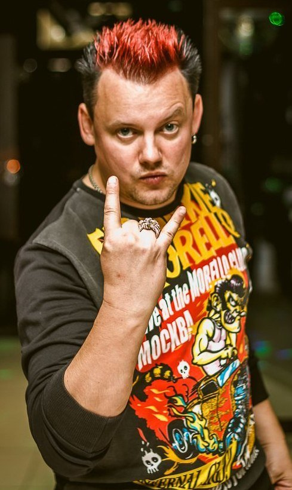

|

Андрей Князев также является лидером группы "Король и Шут". Большинство нами любимых песен принадлежат перу этого гениального человека, он пишет музыку и рассказы. А знакомые картинки с альбомов и футболок принадлежат его кисти. Андрей - это самая художественная натура группы, им оформлены все альбомы группы. У Князя, в отличии от Горшка, преобладают образы лирических героев. Андрей очень любит животных, он признался, что никогда бы не смог причинить вред живому существу. Андрей Князев покинул группу «Король и Шут» еще в 2011 году, несмотря на все ожидания фонатов, опровергает слухи о возвращении. Князь подчеркивает, что без Горшка полноценное возрождение команды невозможно. Назад |